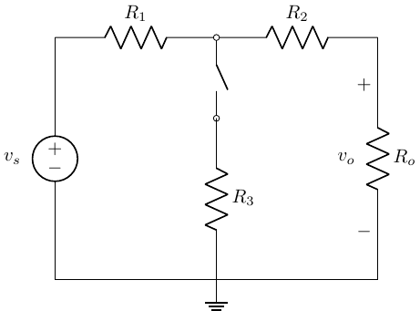
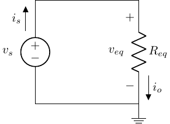
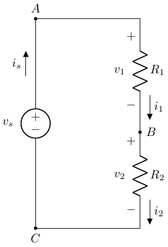
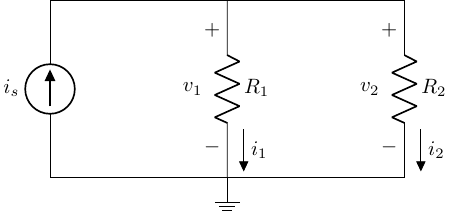

Switched, Series & Parallel Resistance
BME253L - Fall 2025
Duke University
September 3, 2025
Learning Objectives
Solve [switched] resistive circuits.
Simplify series and parallel resistance networks \(\rightarrow\) equivalent resistance.
Review from Last Lecture
KCL, KVL & Ohm’s Law
Balance of Power
Resistive Loads
[Non-]ideal Sources
Measuring Voltage & Current
Analyzing Switched Resistive Circuit

Given:
- \(v_s\) = 300 V
- \(R_1\) = 100 \(\Omega\)
- \(R_2\) = 100 \(\Omega\)
- \(R_3\) = 200 \(\Omega\)
- \(R_o\) = 100 \(\Omega\)
Find \(v_o\) with both the switch open and closed.
We will start with the switch open case…
Step 1: Assign & Label Nodes, Voltage References & Currents
Important
Use the (+) sign convention!
What does the open switch mean?
Tip
An open switch means no current can flow through \(R_3\)!
Step 2: KVL & KCL
KVL
\(D \rightarrow A \rightarrow B \rightarrow C \rightarrow D\)
\(-v_s + v_1 + v_2 + v_o = 0\)
KCL
\(A: i_s = i_1\)
\(B: i_1 = i_2\)
\(C: i_2 = i_o\)
So, \(i_s = i_1 = i_2 = i_o\)
Tip
This is one, closed-path loop!
Step 3: Apply Element Equations (Ohm’s Law)
Ohms’ Law
\(v_1 = R_1 i_s\)
\(v_2 = R_2 i_s\)
\(v_o = R_o i_s\)
Substitute voltage expressions into KVL expression, all in terms of \(i_s\):
\[ \begin{gather} -v_s + R_1 i_s + R_2 i_s + R_o i_s = 0 \\ v_s = i_s \left( R_1 + R_2 + R_0 \right) \end{gather} \]
Series Resistance Foreshadowing
Notice the sum of the resistors…
\[ \begin{gather} i_s = \frac{v_s}{R_1 + R_2 + R_3} = \frac{300 V}{300 \Omega} = 1 A \\ v_o = R_o i_s = (100 \Omega) (1 A) = 100 V \end{gather} \]
Step 4: Check Power Balanace
\[ \begin{gather} P = IV = I^2 R = \frac{V^2}{R} \\ \Sigma_n P_n = 0 \\ (-300 V)(1 A) + (1 A)^2(100 \Omega) + (1 A)^2(100 \Omega) + (1 A)^2(100 \Omega) = 0 ✅ \end{gather} \]
Next: Closed Switch
Step 1: Assign & Label Nodes, Voltage References & Currents

Step 2: KVL & KCL
KVL
\(D \rightarrow A \rightarrow B \rightarrow C \rightarrow D\)
- \(-v_s + v_1 + v_2 + v_o = 0\)
\(D \rightarrow A \rightarrow B \rightarrow D\)
- \(-v_s + v_1 + v_3 = 0\)
\(D \rightarrow B \rightarrow C \rightarrow D\)
- \(-v_3 + v_2 + v_0 = 0\)
KCL
\(A: i_s = i_1\)
\(B: i_1 = i_2 + i_3\)
\(C: i_2 = i_o\)
\(D: i_3 + i_o = i_s\)
Step 3: Element Constraints
\[ \begin{gather} v_1 = i_1 R_1 \\ v_2 = i_2 R_2 \\ v_3 = i_3 R_3 \\ v_o = i_o R_o \end{gather} \]
Next, start to solve!
Substitute current expressions into Ohm’s law relationships:
\[ \begin{gather} i_s = i_1 = i_3 + i_o \\ i_2 = i_0 \\ v_1 = R_1 \left(i_o + i_3\right) \\ v_2 = i_o R_2 \end{gather} \]
Substitute these expressions into KVL equations:
First KVL expression: \[ \begin{gather} -v_s + R_1 i_o + R_1 i_3 + i_o R_2 + i_o R_o = 0 \\ -v_s + i_o \left(R_1 + R_2 + R_o\right) + i_3 R_1 = 0 \end{gather} \]
Second KVL expression:
\[ \begin{gather} -v_s + R_1 i_o + R_1 i_3 + R_3 i_3 = 0 \\ -v_s + R_1 i_o + i_3 \left(R_1 + R_3 \right) = 0 \end{gather} \]
- Solve for \(i_3\) in the first expression and substitute it into the second expression:
\[ \begin{gather} i_3 = \frac{v_s - i_o \left(R_1 + R_2 + R_o\right)}{R_1} \\ -v_s + R_1 i_o + \left(\frac{R_1 + R_3}{R_1}\right)\left[ v_s - i_o \left(R_1 + R_2 + R_o\right)\right] = 0 \end{gather} \]
- Solve for \(i_o\) and \(v_o\):
\[ v_s \left[ -1 + \frac{R_1 + R_3}{R_1} \right] = i_o \left[ \frac{R_1 + R_3}{R_1} \left( R_1 + R_2 + R_o \right) - R_1 \right] \\ \]
\(v_s\) and all the \(R\) values are given, so: \[ \begin{gather} i_o = 0.75 A \\ v_o = i_o R_o = (0.75 A) (100 \Omega) = 75 V \end{gather} \]
Step 4: Check Power Balance
\[ \begin{align} P_1 & = (100 \Omega) \left( i_o + i_3 \right)^2\\ i_3 & = \frac{v_s - i_o\left(R_1 + R_2 +R_3\right)}{R_1} = 0.75 A \\ P_1 & = 225 W \\ P_2 & = (100 \Omega) i_o^2 = 56.25 W \\ P_3 & = (200 \Omega) i_3^2 = 112.5 W \\ P_o & = (100 \Omega) i_o^2 = 56.25 W \end{align} \]
Total Power Dissipated = 450 W
\[ \begin{align} P_s & = i_s v_s \\ i_s & = i_o + i_3 \end{align} \]
Total Power Generated: -450 W ✅
Simplifying Circuits: Series & Parallel Equivalent Resistance
Solving circuits with many components can quickly become cumbersome, especially if we don’t need to know the voltage and current associated with each individual circuit element.
We can simplify resistive networks (connections of resistors), using the following relationships:
Two resistors are considered to be in parallel if they share the same node on each of their connections (i.e., have the same voltage drop across them due to the same nodes).
Two resistors are considered to be in series if the same current flows through them through a common node.
Two circuits are considered electrically equivalent if they share the same I-V (current / voltage) relationship.
Let’s take a look at that open switch example…
Remember that \(i_s = i_1 = i_2 = i_o\)
- \(R_1\) is in series with \(R_2\), which is in series with \(R_o\); they are all in series with one another!
Remember applying KVL:
\(v_s = i_s \left(R_1 + R_2 + R_o\right)\).
This looks like Ohm’s law for a single resistor (\(R_{eq}\)): \(v_s = i_s R_{eq}\), where:
\(R_{eq} = R_1 + R_2 + R_o\)
Series Resistance
- If \(R_1, R_2, ... R_N\) are in series, then \(i_{R_1} = i_{R_2} = ... i_{R_N}\), which means:
\[ R_{eq} = \Sigma_{n=1}^N R_n \]
- Why is this useful? Way easier to solve for \(i_o\) in this case; it is just Ohm’s Law!
Voltage Division
What do series resistors do to a source voltage?

\(KVL: -v_s + v_i + v_2 = 0\)
\(KCL_{B}: i_1 = i_2\)
\(v_s = R_1 i_1 + R_2 i_1\)
\(i_1 = \frac{v_s}{R_1 + R_2}\)
\(v_1 = i_1 R_1 = v_s \frac{R_1}{R_1 + R_2}\)
\(v_2 = i_2 R_2 = v_s \frac{R_2}{R_1 + R_2}\)
Important
Series resistors divide voltage in proportion to \(\frac{R_n}{R_{eq}}\)!
Common Uses of Voltage Dividers
Multiple Fixed Voltage Sources: Create smaller source voltages from a larger single source.
Signal Level Adjustment: Reduce a high voltage signal to a lower voltage level suitable for input to a measurement circuit.
Evaluate Impact of “Real” Voltage Source Impedance: Evaluate the parasitic voltage / power loses due to interal voltage source resistance.
Important
Voltage division will be one of the most important circuit analyses we do in medical instrumentation.
Parallel Resistance Circuits
\(R_1\) & \(R_2\) share common nodes and have the same voltage drop across them, so they are in parallel.
KCL: \(i_s = i_1 + i_2\)
KVL: \(-v1 + v_2 = 0 \rightarrow v_1 = v_2\)
Ohm’s Law: \(i_1 = \frac{v_1}{R_1}\) and \(i_2 = \frac{v_2}{R_2} = \frac{v_1}{R_2}\)
What is \(R_{eq}\) for \(i_s\)?
\(i_s = v_1 \left( \frac{1}{R_1} + \frac{1}{R_2} \right)\)
\(v_1 = i_s R_{eq}\)
\(R_{eq} = \frac{R_1 R_2}{R_1 + R_2}\)
For \(N\) resistors in parallel:
\[ R_{eq} = \frac{1}{\frac{1}{R_1} + \frac{1}{R_2} + ... \frac{1}{R_N}} = \left( \Sigma_{n=1}^N \frac{1}{R_n} \right)^{-1} \]
Or in terms of conductance:
\[ G_{eq} = \Sigma_{n=1}^N G_n \]